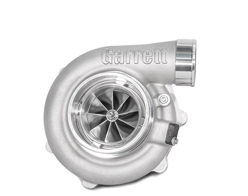

G-Series G35-1050 68mm

Features
- G SERIES COMPRESSOR AERODYNAMICS FOR MAXIMUM HP
- 68mm TURBOCHARGER COMPRESSOR WHEEL
- 78% MAXIMUM COMPRESSOR EFFICIENCY
- MAR-M ALLOY TURBINE WHEEL RATED UP TO 1050° C
- NEW TURBINE AERO PROVIDES HIGHER FLOW AND EFFICIENCY
- STAINLESS STEEL TURBINE HOUSINGS RATED UP TO 1050° C
- STAINLESS STEEL TURBINE HOUSINGS RATED UP TO 1050° C
- FULLY MACHINED SPEED SENSOR AND PRESSURE PORTS
- STANDARD AND REVERSE ROTATION SUPERCORE CONFIGURATIONS
- FREE FLOAT TURBINE HOUSING KITS AVAILABLE IN T4 DIVIDED, T3, AND V-BAND INLET CONFIGURATIONS
- STANDARD ROTATION INTERNALLY WASTEGATED TURBOCHARGERS AVAILABLE. FULLY ASSEMBLED AND CALIBRATED WITH A 0.5 BAR ACTUATOR
- LINK TO G35 TURBO www.garrettmotion.com